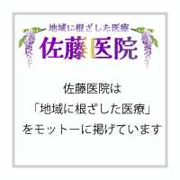
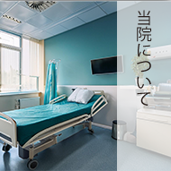
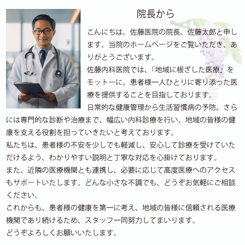
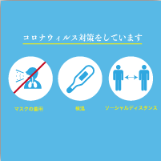

〒000 - 0000
東京都 台東区 上野
東京都 台東区 上野

電話
0 - 0 - 0
000 - 000 - 000





お知らせ
詳しく見る
2024.00.00 Sat
インフルエンザ予防接種について
2024.00.00 Sat
年末年始の休診について
2024.00.00 Sat
健康診断のご案内
2024.00.00 Sat
新型コロナウイルス対策について
2024.00.00 Sat
オンライン診療の導入について
診察時間
| / | 月 | 火 | 水 | 木 | 金 | 土 | 日 |
|---|---|---|---|---|---|---|---|
| 9:00~12:00 | ○ | ○ | ○ | - | ○ | ○ | - |
| 14:00~19:00 | ○ | ○ | ○ | - | ○ | - | - |
受付時間
9時〜12時 / 13〜18時
休診日
木曜・土曜午後・日曜
※祝祭日も診察を行っておりますが、休診日も
ございますので、事前にご確認ください。
診療科目
内科
循環器科
呼吸器科
予防医療・健康診断
生活習慣病（高血圧、糖尿病等）治療・管理
※その他、ご不明点があればお電話またはメールでお問い合わせください。
医院概要
住所
〒123-4567
東京都台東区上野0丁目 0 - 0
アクセス
最寄駅：JR上野より徒歩5分
最寄駅から徒歩5分の距離にあり、
便利な立地です。
駐車場
当院専用の無料駐車場10台分
ありご来院の際は、交通状況に
ご注意ください。
お問い合わせ
00-0000-0000
info@sato-clinic-test.jp
